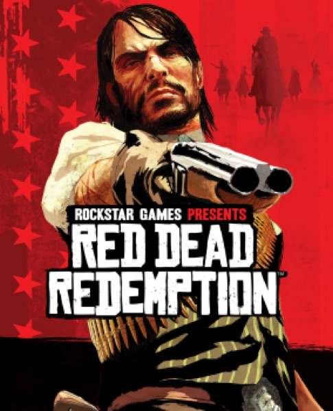

Open World · 2010
Red Dead Redemption
A frontier ending in real time, with the best final act Rockstar ever wrote.

Cover: Wikipedia: Red Dead Redemption
Facts
- Released
- 2010-05-18
- Genre
- Open World
- Category
- Open World
- Platforms
- Mobile, Nintendo, PC, PlayStation, Xbox
- Developers
- Rockstar San Diego
- Publishers
- Rockstar Games